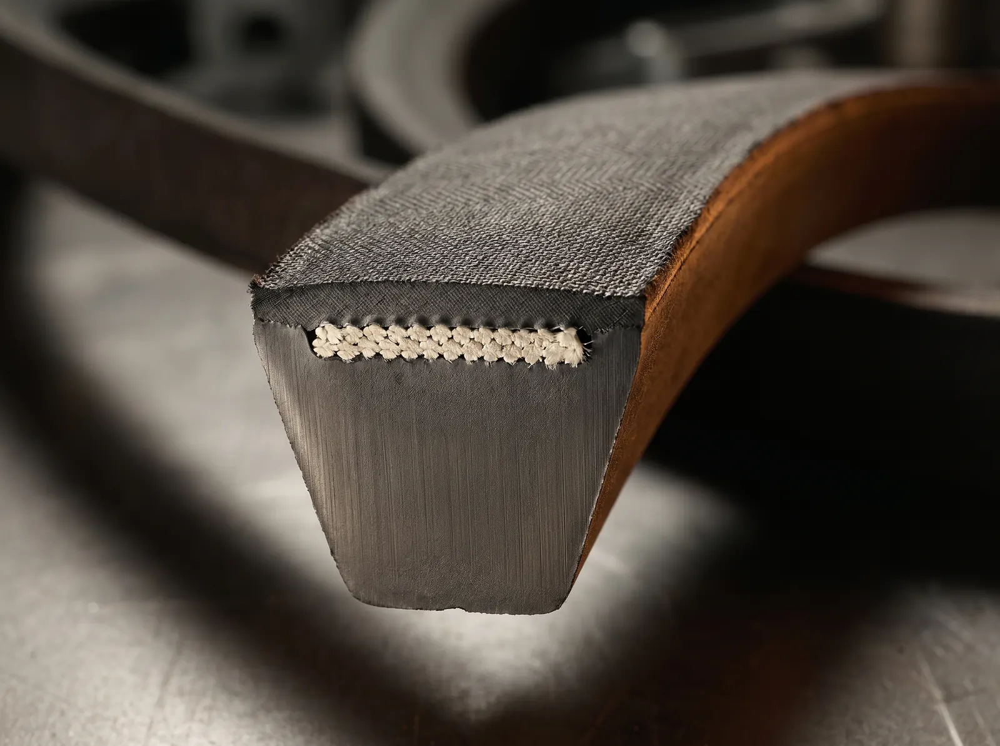

Carro-chefe

Alta performance em transmissão
Correias em V: o carro-chefe da eficiência industrial.
Importação direta com tecnologia de ponta para garantir o máximo torque e a menor perda de energia em qualquer sistema de transmissão.
-
Lisas (clássicas): robustez e estabilidade para transmissões convencionais. Alta resistência a óleos e calor.
-
Dentadas (cogged): maior flexibilidade e dissipação de calor. Ideal para polias de menor diâmetro e altas velocidades.
-
Sextavadas (double-V): transmissão de potência em ambos os lados. Perfeitas para sistemas com polias em serpentina.
- Aplicação
- Indústria, Mineração e Agronegócio.
- Estoque
- Disponibilidade imediata com expedição estratégica (PR e MT).
NBRDINISOASTMRMA